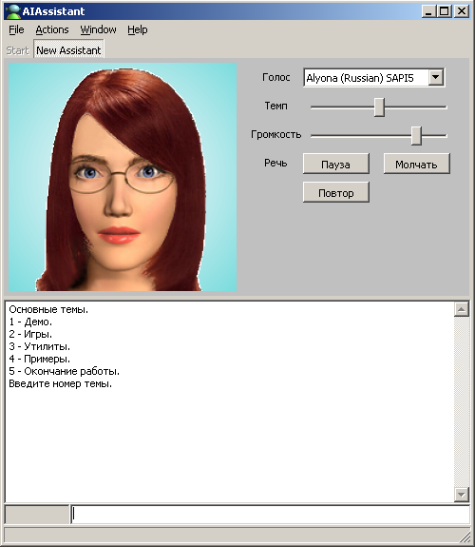

http://www.youtube.com/watch?v=QtMWlKGa4sg - Видео
Текущее состояние обсуждается периодически на разных форумах: roboforum.ru, ai.obrazec.ru, gotai.net, ailab.ru. В частности здесь одно из последних обсуждение: http://ailab.ru/forum/deyatelnost/predlojeniya-proekti-razrabotki/razrabotka-sistemi-obsheniya-s-aiassistant/6.html
Я продолжаю разработку программы AIAssiatant на основе продукционных правил. Теперь она содержит плагин говорящего аватара наподобие MS Agent. Сейчас особенно актуальным для меня стало создание многообразных систем общения между пользователем и программой. Хотелось бы сделать их относительно независимыми от вида ЕЯ.
Назначаний системы общения несколько (неполный список):
Из традиционных способы общения мне известны (неполный список):
Хотелось бы создать систему общения с взаимно однозначно понимаемыми сообщениями и основанную на общих понятийных принципах (схожие понятийные пространства), независимую от вышеуказанных назначений, способов общения и вида ЕЯ.
Из последнего - добавил онтологию SUMO, где описаны связи между понятиями включая самые абстрактные. Если ее грузить в RAM, то работает она быстро. Быстро выдает ответы онтологического поиска. Однако, когда я стал добавлять к ней еще онтологию WordNet и еще несколько онтологий, описанных в терминах SUMO, то понял, что 300- 400 мб для RAM - большая обуза. А ведь еще нужно будет пользовательские знания куда-то размещать. Теперь вместо того, чтобы заняться лингвистикой - подсистемой синтеза и анализа простого подмножества английского языка, я перевожу систему в дуальный режим, как это сделано и в PC и у человека - долговременная, но более медленная онтологическая память будет расположена поверх реляционной БД примерно так, как это сделано в проекте Jena. В RAM будет располагаться фокус активного внимания - то, что актуально в текущем контесте.
Для минимально полезной системы - умной энциклопедии нужны как минимум:
Первое и второе я активно делаю, третье и четвертое - к этому еще не приступал. Сделал лишь устную речь. Однако сама система AIAssistant, кот. может работать в 4 режимах, скоро будет доступна и все желающие могут на языке ECLIPS писать свои плагины - программы, либо сообща работать над одним из главных плагинов - синтетическим интеллектуальным помощником человека.
На данный момент в одной базе данных на HDD я разместил две онтологии - SUMO и WordNet, которые объединены логически. Хочу добавить русскую WordNet, но пока нашел лишь одну не очень доделанную версию. В другой базе данных USER я создал пользовательскую онтологию, которая также будет логически связана с SUMO и WordNet. Это позволяет всм онтологиям работать в виде единой онтологии.
Я сделал временный вариант языка запросов к онтологиям Babylon. Вот некоторые реализованные запросы:
Результатом работы этих запросов является появление в RAM фактов - минимальных частичек знаний в моей системе - триплетов.
Теперь работаю над следующим: Более высокий уровень работы с такими знаниями - формировние более сложных запросов. Например, какие суперклассы являются общими у двух owl классов. С индивидами - аналогично.
Далее - сравнение двух или нескольких ветвей онтологи. Допустим, по итогам анализа полученного от собеседника сообщения на ЕЯ в памяти сформируется фрагмент онтологии. Но этот фрагмент неполон, т.к. содержит слова и части речи WordNet. Если из онтологии USER добавить контекст - при каких обстоятельствах происходит общение ИИ с собеседником, то это даст возможность достройки дерева онтологии в RAM, наполняя более глубоким смыслом анализируемую онтологию входного сообщения. Это и есть понимание того, что хотел донести до ИИ собеседник с пом. речевого сообщения. Вопрос лишь в том, насколько построенная ветвь онтологии отличается от той, которая неявно или явно создавалась в уме источника сообщения.
Второе направление работ, над которым я работаю - это синтез речевого сообщения на основе онтологии. Тут есть свои проблемы. Например, качество сформированного результата - текстового сообщения зависит от соотношения степени абстрактности исходной онтологии и требуемой абстрактности конечного сообщения. Если на вход подать онтологию (мысль) где говорится слишком общо, а на выходе нужен предельно конкретный текст, то множество пустых узлов такой онтологии придется программе домысливать, наполняя каким-либо собержимиым. И тут вспомогательным средством вновь может оказаться онтология контекста USER.
Я написал очередной библиотечный модуль на языке ECLIPS в свою систему AIAssistant. Этот модуль осуществляет синтаксический анализ (парсинг) входного сообщения на основе контекстно - независимых грамматик. Но т.к. для работы ИИ требуется обработка контекстно-зависимых грамматик, то я в настоящее время совершенствую этот модуль. Кроме того, я осуществляю соединение онтологий, имеющихся в программе с этим модулем. Это позволит все терминальные и нетерминальные символы а также правила их вывода брать из онтологий. Но что такое эти самые правила и символы? Это по сути есть онтологическое описание мира.
Появилась мысль о том, что этот анализ для входной одномерной последовательности слов на некотором ЕЯ можно распространить на двухмерный и трехмерный случаи. Тогда получим анализаторы письменной речи, звука, изображений и 3D пространства на едином принципе. Но для подтверждения такой идеи придется написать специальный плагин - тестовую лабораторию, что я уже и начал осуществлять.
В настоящее время я продолжаю разработку программы AIAssistant. Добавил нового аватара, которого можете наблюдать на изображении, 2D игровой движок, чтобы можно было создавать динамические демонстрации, например управление умным домом с наблюдением на экране в реальном времени процессов, протекающих в различных установках (работа кондиционеров, очистки воды, распределение температур по комнатам и т.д.). Напомню, что в центре всей системы движок, основанный на продукционных правилах.
Сейчас приступаю к соединению онтологической БЗ с данным типом системы общения. Попробую создать вопрос- ответную систему по этой БЗ. Затем наделю аватара некоторыми чертами личности и добавлю относительно несложное самообучение и распознавание пользователя по изображению с веб камеры. И позже займусь возможностью вести диалоги на ЕЯ с не очень глубоким пониманием смысла (в пределах заложенной в программу онтологии).
Я практически постоянно или улучшаю код AIAssistant или пишу новые плагины для него. Сейчас пишу плагин музыкального синтезатора на основе вмонтированного недавно в AIAssisstant SF2 многоголосого синтезатора. Цель моей разработки в этом направлении - исследовать музыкальный язык как один из языков общения между мыслящими субъектами. В музыке как и в других языках есть синтаксис, семантика. Поэтому его так же как и обычный ЕЯ нужно распознавать - что именно хотел сказать композитор и исполнитель какой-то музыкой. Ну и синтез новых мелодий на основе онтологических знаний - это вторая часть общения.
© AIKernel 2007-2011
29.07.2007 - 15.05.2011